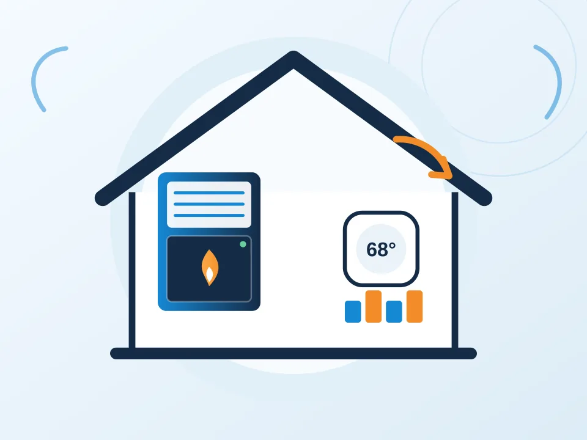
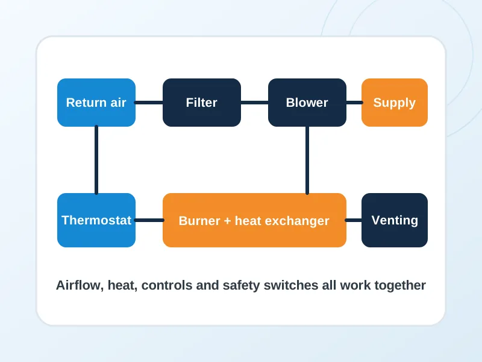
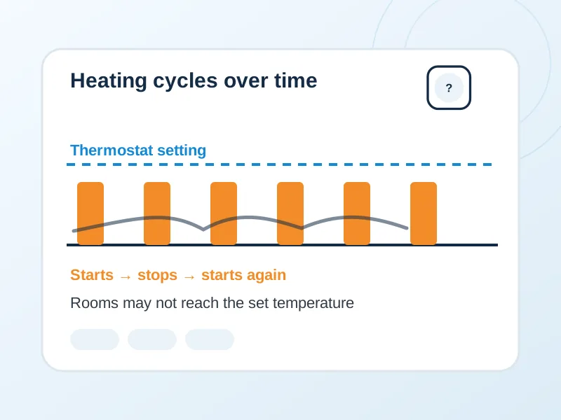
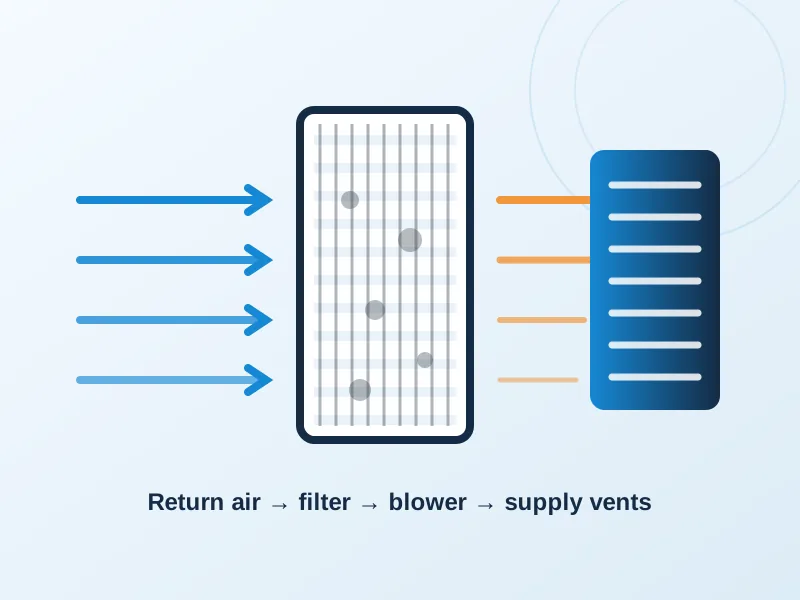

Warm air may show up briefly, then stop.
Residential furnace repair · Los Angeles, CA
Furnace Short Cycling in Los Angeles: Causes and Repair
Furnace short cycling means your furnace keeps starting and stopping before it completes a normal heating cycle. The heat comes on, shuts off too soon, and the cycle repeats. Here is what it can mean and what to do next.
Regular service hours: 7:00 AM–7:00 PM · Emergency response availability: 24/7 · Residential service only

Residential furnace service
24/7 emergency response availability
269 N Soto St, Los Angeles, CA 90033
Quick answer
Why Does My Furnace Keep Turning On and Off?
Furnace short cycling means a furnace starts and then shuts off again before it completes a normal heating cycle, often within a few minutes, so the home may not reach the thermostat setting. Common reasons include restricted airflow, overheating, thermostat problems, flame-sensing interruptions, control faults, or equipment sizing. Emergency HVAC LA offers residential furnace repair assessments in Los Angeles. Call (323) 606-0886.
Page reviewed November 15, 2026. General information, not a diagnosis of your equipment.
| What it is | A furnace that stops before a normal heating cycle finishes |
|---|---|
| Typical pattern | Cycles of only a few minutes, repeated |
| Common causes | Airflow, overheating, thermostat, blower, ignition, controls, sizing |
| Safe first look | Thermostat setting, filter, open vents |
| Needs a professional | Any inside-the-furnace, gas or electrical work |
| Call | (323) 606-0886 |
The basics
What Is Furnace Short Cycling?
In a normal heating cycle, the thermostat calls for heat, the furnace starts, warm air is delivered through the vents, and the furnace shuts off once the home reaches the thermostat setting. How long that takes depends on the weather, the home, and the equipment.
With short cycling, the furnace starts and stops too soon. Many HVAC sources describe cycles shorter than about 5 to 10 minutes. You may hear it click on, feel a little warm air, and then hear it shut down, then repeat.
Repeated starts and stops deserve attention because they can leave rooms uncomfortable and add wear to the furnace, and the shutdown may be a safety control doing its job. The same symptom can come from different causes, so the cause cannot be identified from the symptom alone.

- Thermostat calls for heat
- Furnace starts
- Furnace stops too soon
- Cycle repeats
Normal heating cycle or short cycling?
| What you notice | Usually normal | Worth an assessment |
|---|---|---|
| When the furnace stops | After the home reaches the thermostat setting | Before the home has warmed up |
| Run length | Varies with weather and home; shorter on mild Los Angeles days | Repeated runs of only a few minutes |
| Room comfort | Rooms reach the setting | Rooms stay below the setting |
| Pattern | Occasional, with a clear reason | Repeats again and again |
| Restart behavior | Starts again when the temperature drops | Tries to restart right away, or stops after several attempts |
If your furnace stops only after the home reaches the thermostat setting, that is normal operation, not short cycling.
What you may notice
Common Signs Your Furnace Is Short Cycling
These are homeowner-observable signs. They can have different causes and do not identify a failed part.

The furnace keeps starting and stopping instead of running through a full cycle.
The home stays cooler than you selected, even though the furnace is running on and off.
The blower may start or stop at a different point than you expect in the heating sequence.
The furnace tries to start again and again, and may stop trying after several attempts.
It may be worse at night or on the coldest days. Write down when it happens and how long each run lasts.
Possible causes
Possible Causes of Furnace Short Cycling
Each of these can be a possibility. None is a confirmed diagnosis for your furnace. A qualified assessment is needed to find out which one, if any, applies.
Restricted airflow
A dirty or clogged filter, dirty blower components, or ductwork limits can reduce airflow. The furnace may heat up faster than the air can carry heat away and shut down early.
Blocked or closed vents
Closed supply registers or blocked return grilles can restrict airflow in the same way, even in rooms you rarely use.
Overheating and safety limits
A furnace includes a safety limit that stops the burner when internal temperatures rise too high. Repeated limit shutdowns usually point to something limiting airflow or heat transfer.
Blower motor or blower controls
If the blower does not start, run, or time itself as designed, heat can build up or rooms can stay cool. Timing between burner and blower can look out of sync.
Thermostat location or settings
A thermostat near a vent, sunny window, or draft can read the room incorrectly. Settings, batteries, or control faults can also end a heating call early.
Ignition or flame sensing
If the furnace does not confirm a steady flame, it can shut the gas off and try again. Several attempts may happen before the furnace locks out.
Venting and draft safeguards
Furnaces monitor combustion venting. An obstructed vent or flue, or a problem with the draft safeguards, can stop the furnace so that combustion gases are not left to build up.
Electrical or control-board faults
The control board manages the heating sequence. A fault there can interrupt it, and the symptom can resemble other problems.
Equipment sizing or system setup
A furnace that is large for the home can heat the space quickly and shut off before a normal cycle. Duct layout can also cause uneven heating.
What the symptom may point to
| What you notice | Possibilities to discuss | Sensible next step |
|---|---|---|
| Stops soon after starting, rooms stay cool | Restricted airflow, blocked vents, overheating safety limit | Check the filter and vents safely, then request an assessment |
| Blower seems out of step with the burner | Blower motor or blower-control issue | Note the sequence and request an assessment |
| Stops soon after the burner lights | Flame sensing, ignition, venting or draft safeguards | Do not open the furnace; request an assessment |
| Short runs near the thermostat or in mild weather | Thermostat location or settings, or a furnace large for the home | Check the thermostat setting and describe where it is mounted |
| Some rooms stay cold, others get hot | Duct layout, return air, airflow balance | Share which rooms are affected when you call |
| Stops with a displayed code or repeated lockout | Control or safety-circuit fault | Note the code without opening panels, then call |
Safe first look
What a Homeowner Can Safely Observe
These checks need no tools and never involve opening the furnace.
- Observe the pattern. Note how long the furnace runs and how often it starts and stops.
- Check the thermostat. Confirm it is set to Heat, the setting is above room temperature, and the display or batteries look normal.
- Look at the air filter. Replace it only if you can do so safely and by the equipment instructions. Many sources suggest checking filters every 1 to 3 months.
- Check normal vents. Make sure supply registers and return grilles are not blocked by furniture, rugs, or other objects.
- Note any displayed error code. Write it down without opening any equipment panel.

Do not do these yourself
Furnaces involve gas, high voltage, and safety controls. Leave these to a qualified professional.
- Open furnace electrical compartments
- Touch wiring or control-board terminals
- Bypass safety switches or limit controls
- Adjust gas pressure or ignition components
- Remove safety panels while the furnace operates
- Attempt repairs to gas or electrical components
Why it matters
Why Professional Furnace Assessment Matters
Short cycling can involve airflow, overheating, blower operation, thermostat controls, ignition, venting, or the control board. Because several of these can look alike from the living room, the symptom alone does not show which part has failed.
A qualified assessment looks at how the furnace behaves and why it is stopping. The goal is to explain what was found and recommend a repair that fits, rather than replacing parts by guesswork. Emergency HVAC LA does not guarantee a particular outcome in advance, because it depends on what the assessment finds.
See our Furnace Repair page →
What to expect
Our Furnace Short Cycling Repair Process
A simple path from first call to a decision you are comfortable with.
STEP 01
Contact Emergency HVAC LA
Call (323) 606-0886 or use the contact page.
STEP 02
Describe what is happening
Explain the repeated starting and stopping, when it began, and any code shown.
STEP 03
Arrange an assessment
Confirm scheduling and service details for your home.
STEP 04
Review the findings
Go over what was found and the repair recommendations.
STEP 05
Discuss next steps
Decide how to proceed before any work begins.
Safety first
When to Stop Using the Furnace
Your safety comes before comfort. Do not keep running a furnace that appears unsafe.
Smell gas or suspect a leak
- Leave the building right away.
- Do not operate switches, appliances, or anything that could create a spark.
- From a safe location, contact your gas utility or call 911.
Carbon monoxide alarm or exposure
- If an alarm sounds or you suspect exposure, leave the building.
- Contact emergency services.
- Do not re-enter until authorities say it is safe.
Also stop using the furnace and call a professional if you see scorching or soot, smell burning, or hear unusual noises. You can turn the thermostat to Off while you arrange help.
Local contact
Why Contact Emergency HVAC LA?
Emergency HVAC LA provides residential heating and air conditioning services from a Los Angeles business address. Call to describe what your furnace is doing and to confirm service availability for your location.
| Services | Residential heating and air conditioning |
|---|---|
| Address | 269 N Soto St, Los Angeles, CA 90033 |
| Regular service hours | 7:00 AM–7:00 PM |
| Emergency response | Availability 24/7 |
| Phone | (323) 606-0886 |
Helpful answers
Furnace Short Cycling: Frequently Asked Questions
Short answers to common questions. Causes vary and need an assessment.
What does it mean when a furnace short cycles?
Furnace short cycling means the furnace turns on and shuts off again before it finishes a normal heating cycle, so the home may not reach the thermostat setting. Many HVAC sources describe it as cycles shorter than about 5 to 10 minutes. The cause varies and needs an assessment.
Why does my furnace keep turning on and off?
A furnace can keep turning on and off because of restricted airflow, overheating that trips a safety limit, thermostat location or settings, blower problems, flame-sensing or ignition interruptions, control faults, or equipment sizing. The symptom alone does not show which one applies, so a qualified assessment is the reliable way to find out.
Can a dirty furnace filter cause short cycling?
Yes, a clogged filter can restrict airflow, which may let the furnace overheat and shut down early. It is one common possibility, not a confirmed cause. If you can do it safely and by the equipment instructions, replace a dirty filter. If the problem continues with a clean filter, request an assessment.
Can an overheating furnace shut down repeatedly?
Yes. Furnaces include safety controls that shut the burner off if internal temperatures get too high. Restricted airflow or blower problems can contribute. Repeated shutdowns mean something is limiting the system, and the safety control should never be bypassed. Request professional furnace repair.
Can a blower problem cause furnace short cycling?
It can. If the blower does not move air as intended, heat may build up inside the furnace or rooms may not warm evenly. Blower motors and blower controls are one possible cause among several. Only a qualified assessment can confirm whether the blower is involved.
Is furnace short cycling dangerous?
Short cycling is not automatically dangerous, but it can signal a safety control doing its job, and repeated shutdowns add wear. If you smell gas or a carbon monoxide alarm sounds, leave the home and call 911 or emergency services. Otherwise, arrange a professional assessment soon.
Should I turn off a furnace that keeps short cycling?
If you see scorching, smell burning or gas, hear unusual noises, or a carbon monoxide alarm sounds, stop using the furnace and follow the safety steps on this page. If it is only starting and stopping, you can turn the thermostat to Off while you arrange an assessment.
When should I request professional furnace repair?
Request furnace repair when the furnace keeps starting and stopping, rooms do not reach the thermostat setting, or the problem continues after you check the thermostat and a clean filter. Call (323) 606-0886 and describe what the furnace is doing.
How long should a furnace run before it shuts off?
A normal heating cycle runs until the home reaches the thermostat setting, and the length depends on the weather, the home, and the equipment. On mild Los Angeles days, shorter runs can be normal. Repeated runs of only a few minutes that do not warm the home are the pattern worth checking.
Why does my furnace short cycle even with a new filter?
A new filter rules out only one possibility. Other causes include closed or blocked vents, thermostat placement or settings, blower issues, flame-sensing or venting safeguards, control faults, or an oversized furnace. If short cycling continues after a filter change, request a professional assessment.
Is a furnace that turns off when the house reaches the set temperature short cycling?
No. Turning off after the home reaches the thermostat setting is normal operation. Short cycling is when the furnace stops early, before the home has warmed. A thermostat can also restart the furnace quickly if the temperature drops a little past its set range, which is a separate question.
Does furnace short cycling hurt the furnace?
It can. Frequent starts and stops add wear to furnace components and may shorten equipment life, and the home may be less comfortable. How much depends on the system and the cause. This is why repeated short cycling deserves a timely assessment rather than waiting.
Why does my furnace short cycle at night?
Furnaces run more often when it is coldest, and thermostat schedules, vent positions, and closed doors can change airflow overnight. Short cycling at night does not point to one cause. Note when it happens and how long each run lasts, then share that when you call.
How much does furnace short cycling repair cost?
The cost depends on what the assessment finds, such as a filter or airflow issue, a thermostat issue, or a failed part. No price can be given from the symptom alone. Ask for the findings and repair recommendation, and discuss next steps before approving work.
Does Emergency HVAC LA repair furnaces that short cycle in Los Angeles?
Emergency HVAC LA provides residential furnace repair in Los Angeles. Regular service hours are 7:00 AM to 7:00 PM, and emergency response availability is listed as 24/7. Call (323) 606-0886 to describe the problem and confirm availability for your address.
Talk with Emergency HVAC LA
Furnace Keeps Turning On and Off?
Describe what your furnace is doing and arrange a professional assessment. Call to discuss your home in Los Angeles.